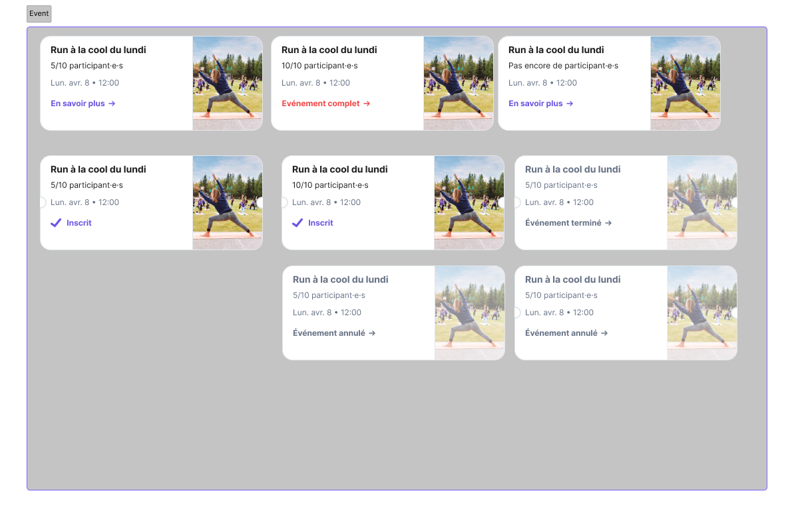
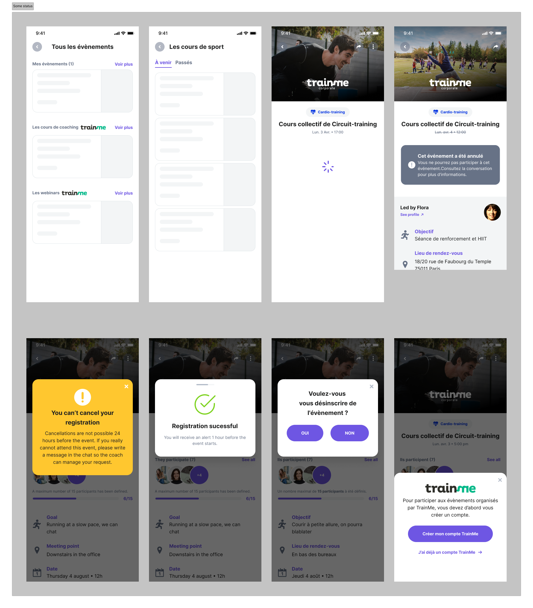

Events feature

As a product designer at United Heroes, I was tasked with developing a feature that could increase user engagement on the app. After conducting research, we identified a lack of engagement among our current user base and decided to address it by bringing physical wellness events and webinars into the app. Our goal was to make it easy for users to sign up and participate in these events while staying within the United Heroes ecosystem.
To accomplish this, we collaborated closely with Train Me, an event-organizing platform, to integrate their platform into our app. Working alongside a product manager and two front-end developers, I led the design direction for the new Events feature.
- Roles: Research, Visual Design, UX, UI
- Tools: Figma
- Year: 2023
- Context: Workplace
Research and design exploration
Our design process involved creating wireframes, user flows, and prototypes that explored different ways to present these categories and events. We also identified key features that would make it easy for users to navigate and sign up for events. Once we had a design direction, we conducted user testing sessions with 5 participants to identify areas where we could further improve the feature.
Design
Example of a component
The event card component is a key part of the events feature. It provides users with a quick and easy way to view important details about the events, such as the date, time, status and description.The event card component also displays the number of guests who have already RSVP'd for the event, providing users with an easy way to determine how popular their event is and how many people will be attending.

Modals, loading states and others
Confirmation screens to prevent accidental actions, sign in screens for account access, loading screens...
Development and Rollout
Our development team, working closely with Train Me, built the infrastructure for the feature, based on our design and testing phase. After conducting final checks and tests, we rolled out the Events feature to our users. With this feature, users can now join a variety of wellness events and webinars from within the app, making it easy to stay engaged with our platform.
Future plans
Our next step is to monitor usage and gather feedback from our user base. Based on this feedback, we plan to optimize the feature further and add new features to enhance user engagement. In the long term, we plan to organize our own events within the United Heroes platform, bringing a unique and personalized wellness experience to our users. The Events feature is an exciting new chapter in United Heroes' journey, and I'm proud to have led the product design effort with such a talented team.